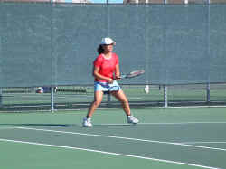
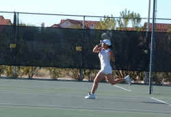

|
 Thank
heaven Liz does not have an 8 am match tomorrow morning.
That's because she took out the number six seed, Alessandra
Jordan of Texas, in the Girls Winter National 14s this
morning in straight sets, 6-4, 6-3. Liz played a very smart
match. Jordan, a ferocious counter-puncher, tried
everything in her arsenal of tricks to rattle Liz, but Kobak
remained composed, playing percentage tennis, and prevailing
in a brilliant last point in which Jordan got back two balls
that should have been outright winners before Liz hit a down
the liner forehand out of reach.

An
aggressive forehand and taking ball on the rise are the key
for Liz to continue her winning ways. A little bit of patience
won't hurt either. Here she displays her winning form against
Sara Lett in a second round win 6-3, 6-1.
|
|
It
doesn't hurt to be comfortable. The Golf Villas at Oro Valley
provides us with a nice view of the mountains from our living
room balcony. It doesn't hurt that it's right across the
street from the country club site where Liz's matches are now
being played. A fresh tuna salad lunch and a short nap are the
course of action before this afternoon's first round doubles
play. Let's hope the excitement of this morning's singles
victory doesn't get her too pumped.
Last night it was
dinner at Anthony's in the Catalinas. A nice room with a
limited menu, but a huge wine list with huge prices. After a
bumbling start with champagne buckets and glasses going back
and forth on a simple question, we wound up having some very
nice wines. A half bottle of Billecart Salmon Rose made for
mouth-puckering delight. Figs and strawberries on the palette
and wonderful mousse. We followed with a 1987 Barbaresco from
Bruno Giacosa. His wines are mountains of tannin and fruit and
need "centuries" to open up. This may not have been
the best Barbaresco year, but Giacosa's sound winemaking
techniques provided us with some grand gulps. The dining was
less consistent than the wine. My tuna carpaccio appetizer was
superb and my lobster thermador good, but not outrageous.
Lizzie did her usual Caesar salad and enjoyed some tasty
squab. Dorothy had to send back some pasta that was grossly
overcooked and wound up with a hastily prepared thermador that
was not as good as mine. Oh, well. |